CONTENT
PART A - INTRODUCTION TO 3DS MAX
essential working process in 3ds maxBasic
1. understanding 3ds max
2. import
unit setup, layer, attach, group ...
git link
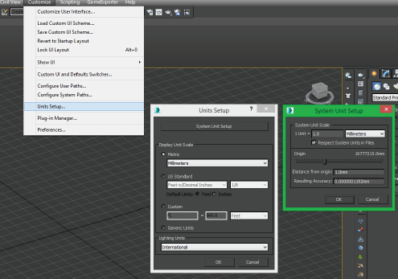
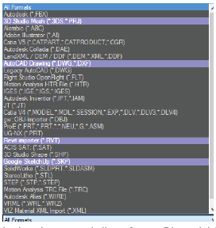
optimization ...
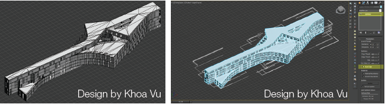 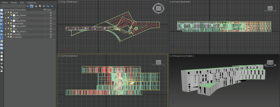
NURBS from Rhino ...
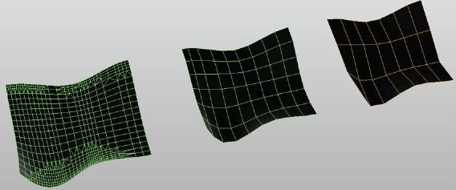
git link
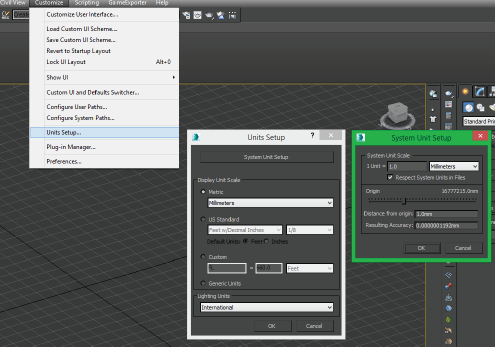
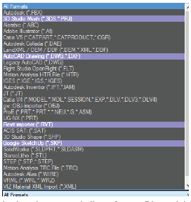
optimization ...
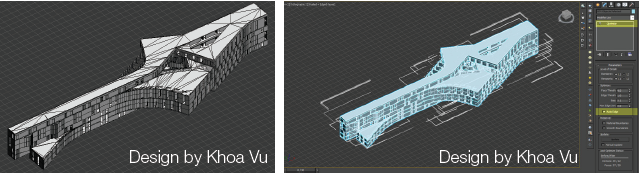 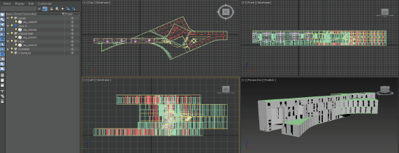
NURBS from Rhino ...
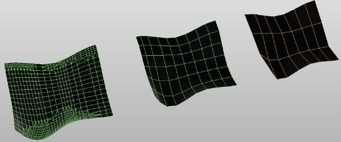
3. object
mergeing car, bench, light, tree...
git link
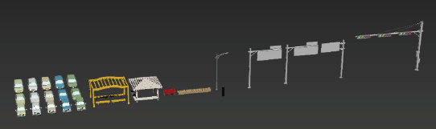
tree distribution(proxy)
git link

ivy tree (landscape)
git link
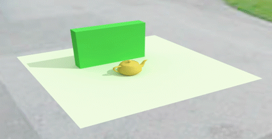
greeble and snow generator...
git link
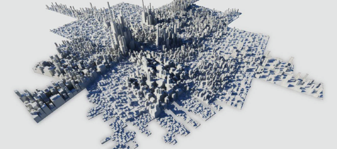
git link
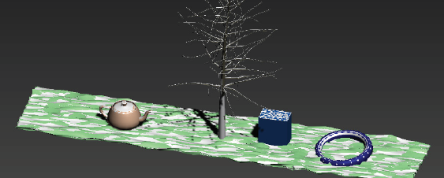
git link
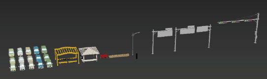
tree distribution(proxy)
git link
ivy tree (landscape)
git link
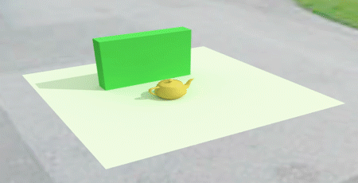
greeble and snow generator...
git link
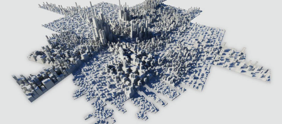
git link
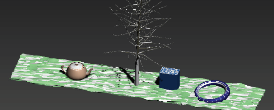
PART B - RENDERING AND POST-PRODUCTION FOR IMAGE
RENDERING
1. understading global illumination(GI) system
lighting / environment / setting...
2. rendering engine and template
Raytracing
Vray Sun(physically based rendering)
HDRI
Dome
Radiosity
Light Tracer
git link
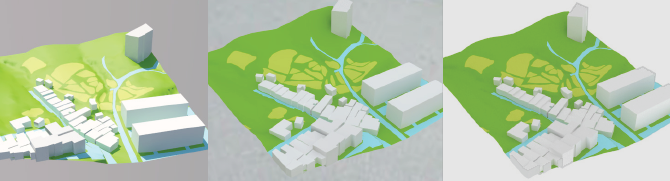
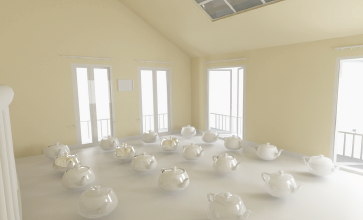
git link
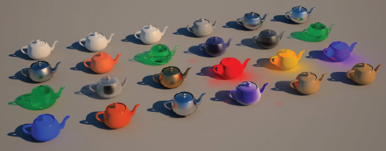
Vray Sun(physically based rendering)
HDRI
Dome
Radiosity
Light Tracer
git link
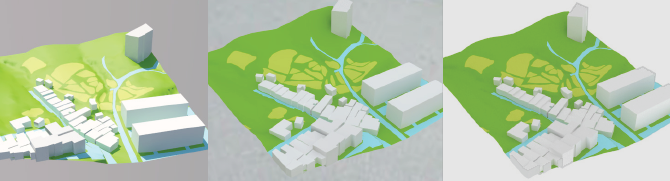
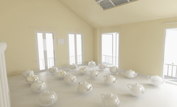
git link
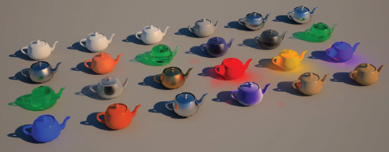
3. script for rendering
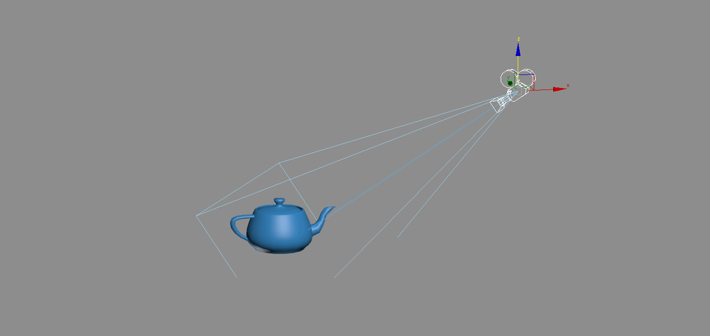4. material
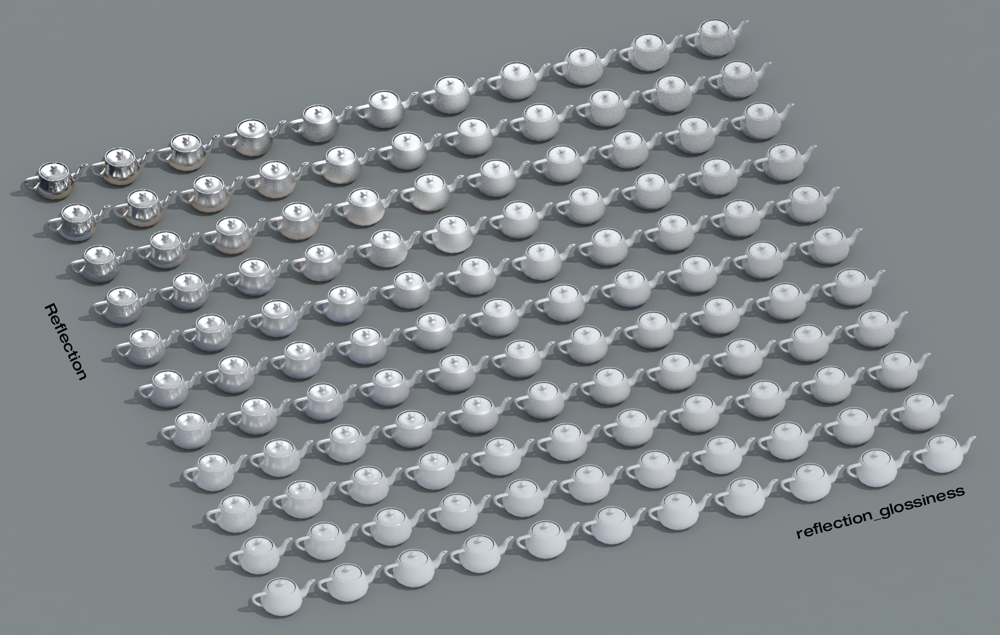 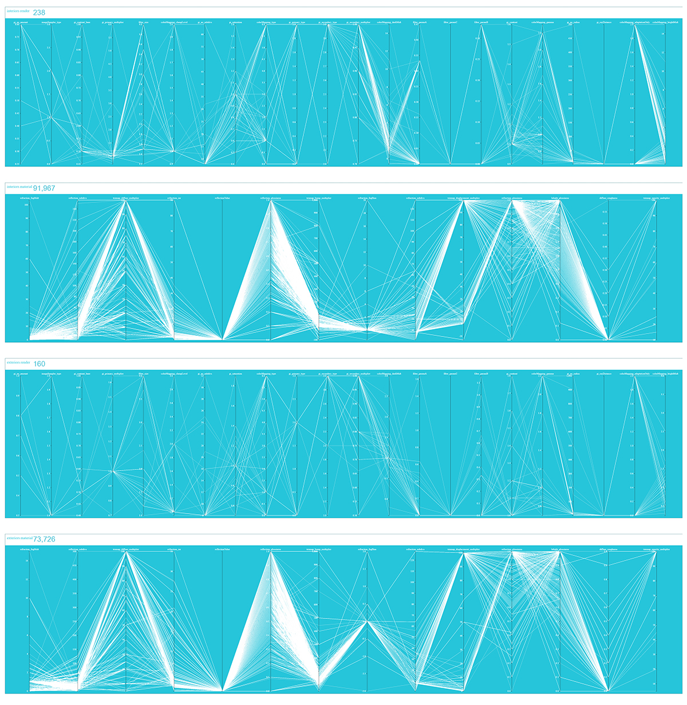POST-PRODUCTION
5. editing and effecting
pixel operation / gamma / collage...
6. post-production for image
git link
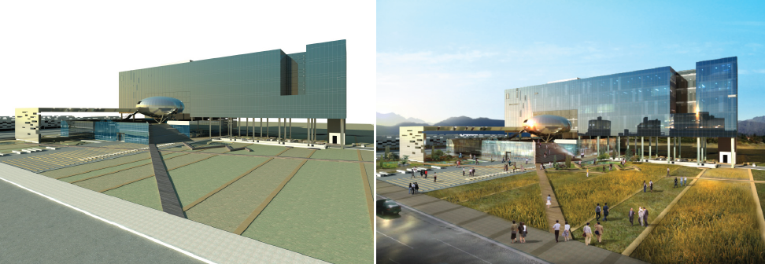 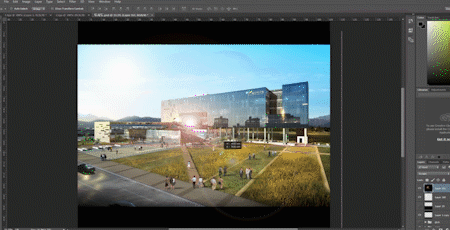
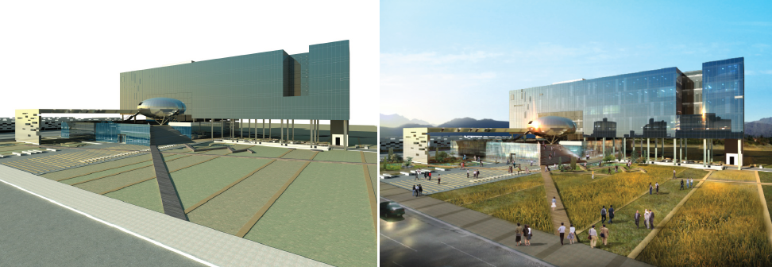 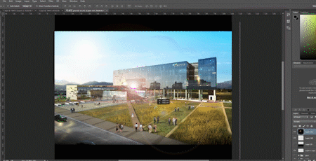
PART C - ANIMATION
general working process for Animation in architectural visualizationBasic
1. understanding animation in 3ds max
transform: position, rotation, and scale
animation with transform (curve editor / trajectory / track bar / frame rate)
git link
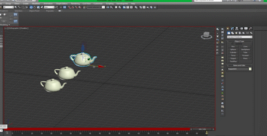 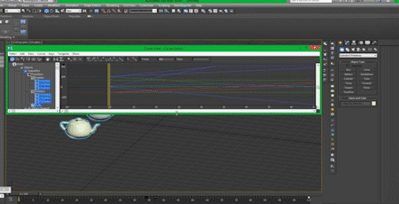
animation with transform (curve editor / trajectory / track bar / frame rate)
git link
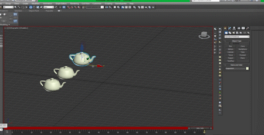 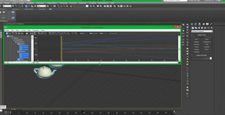
2. animation with materials
3. animation with modifies
4. animation with constraint and link
5. animation for building contruction
6. animation by ANT scripted plugin
7. animation rendering (sequences)
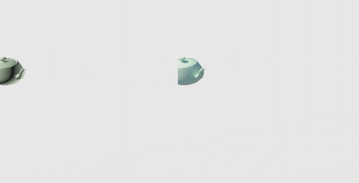
8. interior animation
9. particle system
Advanced
Data-driven visualization / animation
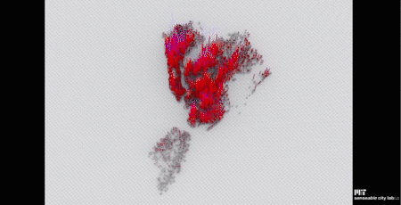
animation by simulation with physics engine and event
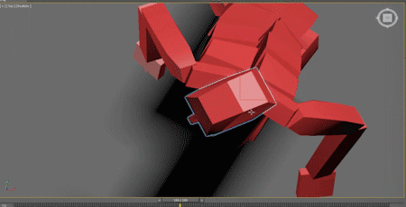
particle system , and Paricle Flow
force-driven particle system or event-driven particle system...
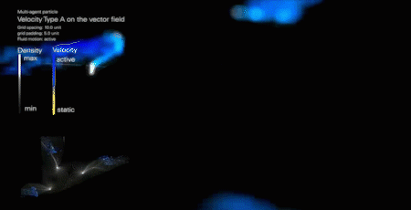
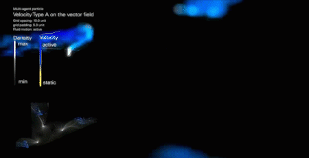
PART D - RENDERING AND POST-PRODUCTION FOR ANIMATION
RENDERING
1. understading global illumination(GI) system
lighting / environment / setting...
2. rendering engine and template
POST-PRODUCTION
1. post-production for video
PART E - USE CASES
general working process of post-production in architectural visualization Case study
1. Camera animation
git link
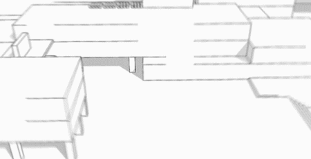
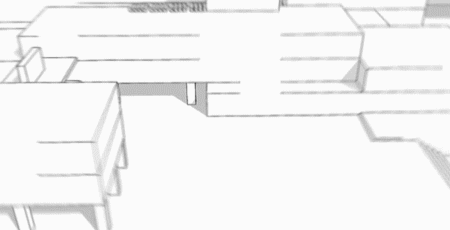
2. Seasonal animation
git link
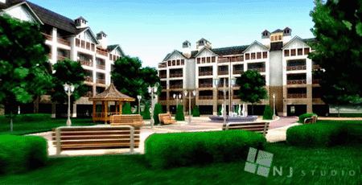
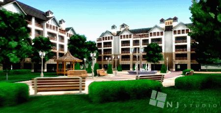
3. Time-Lapse animation
4. Digital Mockup
5. DREAM PAVILION ANIMATION
composite rendering sequences and images for animation

APPENDIX
PRE-PRODUCTION
1. schedule
deadline / video run time / rendering style...
Layout ( Mise-en-scene )
2. frame
vertical
horizontal
square
diagonal frame
open frame
closed frame
3. background and foreground
composition
scale
material
4. camera
angles
high angle
low angle
bird’s eye angle
eye angle
oblique angle
Shots
extreme long shot
long shot
full shot
medium shot
close up shot
extreme close-up shot
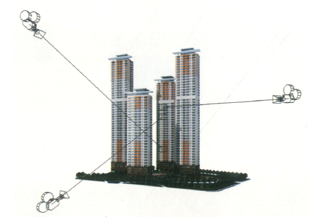
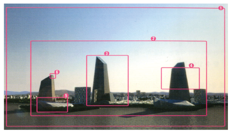
5. sequence or movement
perception
movement from emotion, contrast, frame, tradition
camera
pan
tilt
dolly shot
zoom short
handheld shots
crane shots or aerial shots
scenes
transition between scenes
6. music and sound
7. Raising questions
Reference
horizontal
square
diagonal frame
open frame
closed frame
scale
material
low angle
bird’s eye angle
eye angle
oblique angle
long shot
full shot
medium shot
close up shot
extreme close-up shot
tilt
dolly shot
zoom short
handheld shots
crane shots or aerial shots